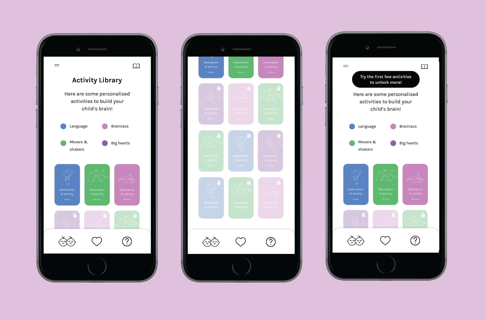
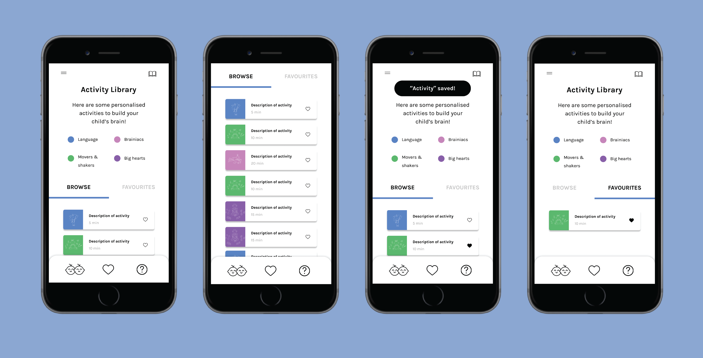

Helping parents keep their children entertained
Role: Product Designer, UI/UX Designer
Duration: May - July 2020
Design programs used: Figma

Introduction
I'm currently working as a Product Designer at Devie. I've primarily been doing work on their main product, a mobile app that helps parents of babies, toddlers, and preschoolers manage and understand their children's development.
Since I started at Devie in March of 2020, the UX and content changes I've made have brought up monthly user retention from 7% to 33%.
Overview
The problem: Parents have a hard time keeping their children entertained.
Through secondary user research, I discovered that many parents are at a loss for how to keep their child entertained. Many parents try lots of activities with their child, but their child is uninterested or becomes bored with the activity. This problem has become increasingly relevant in this age of COVID and constant quarantine, with many parents desperate to keep their children off screens. Earlier testing of the app also showed that a good chunk of parents wanted to skip the chats with the chatbot in order to try the activities.
To try to solve this problem, I created an activity library in the mobile app. The purpose of the activity library is to give parents an assortment of innovative activities they can try with their child. The activity library also exists in a separate tab, so it can be accessed easily anywhere in the app.
Release
The activity library feature was first released in June 2020 and then iterated on and re-released in July 2020.
Secondary User Research
I read through many posts on Reddit Parenting, Mumsnet, Netmums, and parenting FB groups to get a better understanding of what kinds of challenges parents have with taking care of their children.
One of the main challenges I discovered was that parents have a hard time keeping their children entertained. Many parents try lots of activities with their child, but their child is uninterested or the activity isn’t feasible (i.e. going to the park in bad weather). This problem has become increasingly relevant in this age of COVID and constant quarantine, with many parents desperate to keep their children off screens.
Here are a few relevant quotes:
- "They won’t even watch TV now. They hate crafts. They won’t colour paint or build anything. Not interested in lego."
- "My DD has a dollhouse and dolls, which is left to gather dust. All sorts art materials and books. Will not look at books - says she hates reading."
- "I just don't know what to do. It is so cold outside and I hate getting everyone bundled up to go to the park for a few minutes, only to have to come home because someone is miserable."
- "It's trying to make my kids do other things than play games. They have no interest whatsoever, none!!"
First Iteration

In the first iteration of the activity library, I created cards for the activities. On each card, I placed the most important details for the activity: its name and the amount of time needed to complete it. I added an illustration related to the activity for visual appeal.
I created a key to show what the colors of the cards meant.
I then worked with the CEO, who wanted a "lock" interaction for the activities. The first time the parent opens the activity library, all of the activities are locked, except for the first three. After the parent completes the first three activities, the fourth activity unlocks, and so on.
Testing Round 1
However, in usability testing with parent users, we discovered that parents did not like the "lock" interaction. They did not like that they had to do certain activities first to unlock others. They would prefer to browse through all of the activities and choose whichever ones they wanted to do.
Second Iteration
In the second iteration of the activity library, I took the user feedback and removed the "lock" interaction entirely. I then created two sections in the library, a "Favorites" section at the top where parents can find their favorite activities and a "Browse" section, so parents can still discover other available activities.
In designing the interaction for parents to save their favorite activities, I added a "save" button (heart icon) on each of the activity cards. See the interaction flow above.
Testing Round 2
After creating the second iteration, I wanted to try to improve the readability and information density of the activity library. In this new version (see below), I organized the cards into a list view, with the same information on each one.

I wanted to do extensive A/B testing in order to gauge which version users preferred, but we needed to meet a deadline, so instead we conducted a limited survey using prototypes I created in Figma. You can play with the grid version here and the list version here.
After doing the survey, we discovered that users liked the first (grid) version better because the cards were bigger and easier to distinguish from one another.
Impact
Devie is an early-stage startup, so we don't have many metrics to measure the impact of the activity library feature. We exercised our discretion and chose the below screens for the final version of the activity library because, through direct feedback, this version is the one our users liked the most.
Reflections
As one of the first large projects I tackled in the real world, I learned how messy and fast-paced the design process is in real life, as opposed to in school projects. If I had more time, I would've done more varied and in-depth testing, like the A/B testing, to better understand what users wanted and why. I think it also would've been a good idea to have more iterations tested. Ideally, we would've also had metrics to determine the impact of the changes we made and had an A/B testing framework in place for more efficient testing.
Coming off of doing school and personal projects, it was exciting to ship a real product feature that's now being used out in the world. I enjoyed working on this feature, and I'm looking forward to doing more!